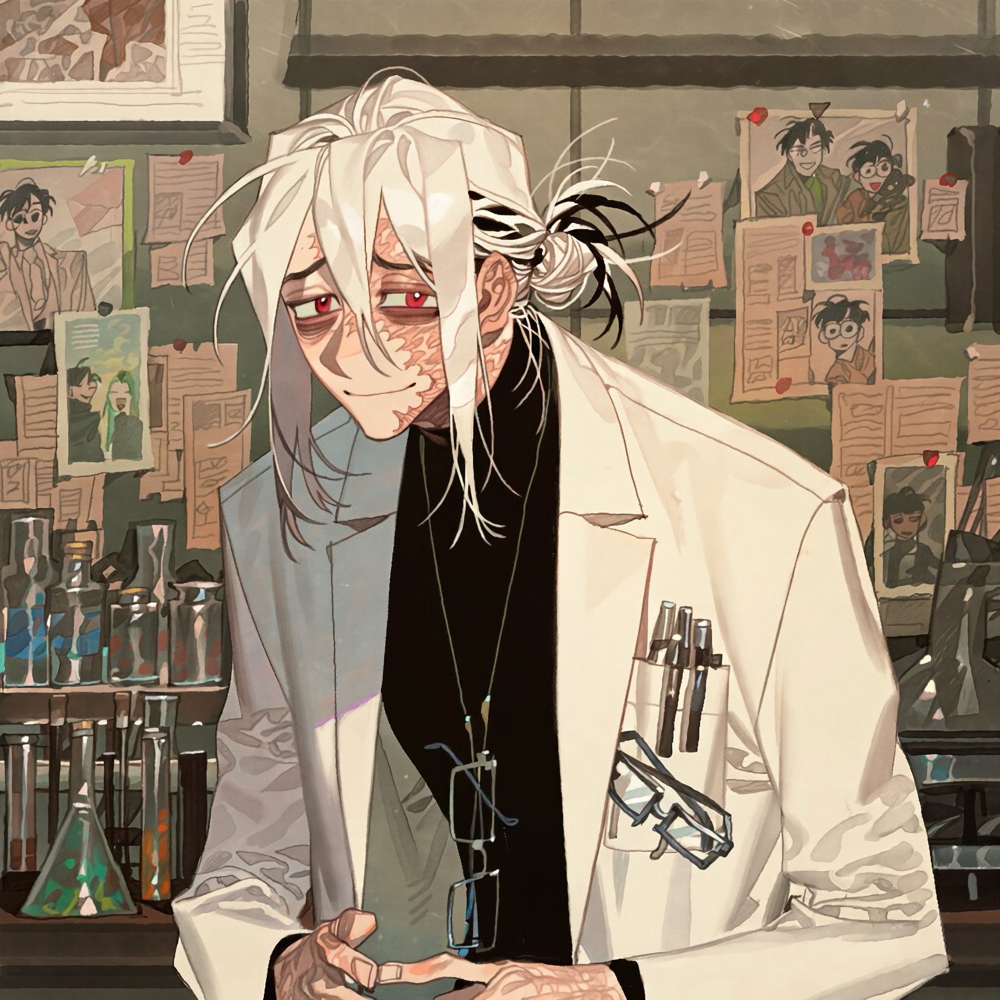

CHARACTER RECORD / 036STATUS: AVAILABLE

✦IMAGE
NOT FOUND
NOT FOUND
冥
✦ WITH OUTFIT服装込み
PROMPT DATATXT / 036
boy, male, adult,
1.5::white hair with black strands, long center-parted bangs, middle-parted long fringe, messy low bun, loose hair strands::,
1.4::droopy eyes, worried eyebrows, timid expression, anxious look, hesitant smile, red eyes, crimson irises, dark circles under eyes, prominent eye bags::,
1.6::severe burn scars covering half of face, extensive facial scarring, irregular scar tissue, uneven skin texture, scars extending from forehead to cheek and jaw::,
1.4::four glasses, glasses worn on face, glasses hanging around neck, glasses tucked into chest pocket, glasses inside pants pocket::,
1.5::very tall, extremely thin, lanky, long limbs, narrow shoulders::, 1.3::hunched shoulders, slouching, awkward posture, fidgeting hands::,
1.3::black turtleneck, white lab coat, dark trousers::, 1.4::thigh holster, knife in thigh holster::,
shy, meek, nervous, easily intimidated, timid researcher,
PROMPT NOT ENTERED